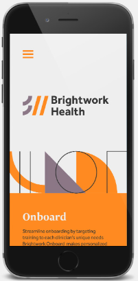

This essay will explore the work of US independent designer and illustrator Kyle Tezak.Tezak is based in Minneapolis, Minnesota, USA. He studied at Southern Illinois University, Carbondale and graduated with a degree in Communication Design. It was here Tezak says he learned to think conceptually to express ideas visually. He also learned that "sometimes what you don't say is more important than what you say". Tezak's areas of focus include identity design, interaction design, icons design and art direction. Tezak works with many different companies and has a range of experience, for example his clients have included Quip, Swink and Energy BBDO. His current website displays his portfolio and a full overview of all the clients he has worked for. Tezak also has a Society6 store where you can purchase his designs. Kyle has stated that who he is influenced by include Ladislav Sutnar, Darrin Higgins and Eileen Tjan. This essay will discuss his work through six examples, this includes Brightwork Health, Roche, Boot Coffee, The Four Icon Challenge, A Promise Renewed and New America.
Tezak has worked on a variety of different projects which include logos, posters, product design, illustrations and UI/UX design. An example of his work includes a branding project for Brightwork Health, Figure 1. Tezak's task was to create a simple but flexible visual identity which stands out from the industry standard. The visual identity design, encompassed a logo, business cards and an app design. The elements used for the logo design are smart as Kyle utilises simple geometric shapes and lines, to create overall complex illustrations, graphics and patterns that reference the diversity of challenges which Brightwork addresses.

Tezak created a series of Swiss inspired posters while helping ‘SapientNitro Minneapolis’ with a successful new business pitch for Roche. SapientNitro is a company who use the power of technology to develop businesses and Roche is a multinational healthcare company, based in Basel, Switzerland. The shown in Figure 3 and 4 demonstrate Tezak's modernist and Swiss style approach to working with design and typography. The use of sans serif typography, left alignment and use of grid and monochrome photography overlaid on clean geometric forms. His restricted colour palette also contributes to his clean and minimal design. Kyle recreates the Swiss style effectively with his clear and crisp presentation. He has made sure to incorporate key elements of the style such as a structured design and the use of Helvetic font. Kyle’s use of the complementary colours, blue and orange, also make the design look a lot more cohesive.
Tezak has done work for Boot Coffee, a campus based near San Francisco where a Speciality Coffee Association (SCA) can be earned. It teaches skills such as coffee tasting, coffee roasting, green coffee buying and barista skills. It was founded by Willem Boot, with the aim to provide hands-on experience and knowledge to pursue a successful career in the speciality coffee industry. His illustration, Figure 5 depicts the process of the coffee beans being grown, exported and finally ground into coffee. This clever approach carefully illustrates a story as you make your way down the page. The colours also complement each other well and they are also muted, which gives the illustration a more natural look. On top of illustrations, Kyle also created a logo for this company as shown in Figure 6. He stated that the dashed lines on the logo "referenced coffee beans growing on a branch" and the "global relationships essential to coffee production", showing that he puts a lot of thought behind his designs to make sure they relate to the topic at hand.
This is a personal project by Tezak. The project involved selecting a story and creating four icons to represent it, while keeping the narrative intact. The project demonstrates just how significant objects and themes are when it comes to storytelling. His minimalist design approach keeps the icon set clean and visually strong, carefully depicting important elements of the story. Equally important is the use of colour, in which Tezak carefully utilises three colours; brown, green with strong black outlines. This project would be a stimulating and fun concept for anyone who wants to develop their design and storytelling skills.Tezak received great praise for this project; the website 'mmminimal' reviewed these icons, stating that they loved the "creativity and minimalism of Kyle’s results". Design leader Katrika Morris also described it as being "wonderfully executed" on her 'one floor up' blog. Tezak stated that this project gave a surprising insight into the authors messages and intentions, along with the role recurring objects play in storytelling.
Tezak has worked with large organisations such as UNICEF. He utilised his UI/UX skills for their project, 'A Promise Renewed', in which he designed a website that discusses the mortality rate of children under 5 across the globe and what can be done to prevent it. Tezak stated that the aim is to shift the audience's perspective and focus on the possibilities rather than the problem. The website asks the question, "Should children live beautiful lives?" and each time the 'Yes' button is clicked, it adds to the real-time number which is visible to anyone viewing the site. The colour scheme, which consists of blue, orange and green, gives the website a positive look. The bright buttons and graphs also stand out well against the blue background.
Kyle has also collaborated with the company 'New America'. This is a company that was founded in 1999 and is dedicated to renewing America by confronting changes caused by rapid technological and social change and seizing the opportunities those changes make. Its work included developing legal, political and technological tools to enable solutions to grow and spread. The organisation is comprised of more than a dozen individual programs. This visual identity and interactive experience collaboration took place over the course of two years and involved people such as Anne Smith, Eric Schmidt and Fareed Zakaria. Not only was the larger organisation given a visual identity as shown in Figure 7, but each individual program was given its own sub-identity. They each received an individual colour and each mark was created using elements found in the New America logo. This is smart design as the unique colour makes each program distinguishable, meanwhile the marks based off the main logo connects them all. The colours used throughout the project are vibrant and bold, which fits with the company's positive goals to grow and renew. The icons and font are white which contrast with the bright colours and are made up of shapes. Each icon has been cleverly designed to relate to each individual program, which can be seen below.
The vibrancy and boldness of Tezak's work is very effective. Also, despite them being fun and colourful, the colours complement each other well so it's not too overpowering. Along with this, his use of line and shape is also very smart. For example, in the icon set he created for 'Medtronic', as shown below, the icons are made up of only geometric shapes and lines leaving the designs relatively simple and easy to decipher what they are meant to be. His iconography was featured in a 2011 Issue 6 of NICE Magazine by Ross Drakes, who were impressed by the “simple and clever execution” of his Zombie Research Society icon set. Kyle created these icons for 'The Zombie Research Society', who are dedicated to "raising the levels of zombie scholarship in Arts and Science." Tezak appears to have impressed a range of different designers. His portfolio website has featured on the 'CSS Design Awards' and his work has been featured on various blogs such as "Visual Families: Graphic Storytelling in Design and Illustration" and LFC's 'Designer Spotlight’, who recognised his "great branding work, web design, posters and album covers". Author of 'Designer Daily', Miko Humbert took note of Kyle's 'amazing graphic design' in his ‘Mezzo 200 Reliability Trial’ project, even describing it as ‘gorgeous.
Overall, Tezak uses a variety of techniques to make his work stand out. He has a wide skillset and isn’t afraid to try new things. Tezak is also highly experienced, having worked with a vast amount and variety of clients over the years. It is clear from the positive reviews and praise he has received from fellow designers and design magazines, that his work has inspired and impressed a lot of people. It is likely that it will continue to do so as Tezak develops his skills further.